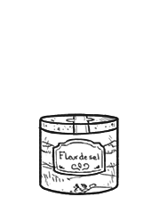

fleur de sel
Fleur de sel, or Flower of salt, is a type of salt that forms as a thin crust on the surface of seawater as it evaporates. It's used as a finishing salt, as a garnish or for added flavor. It is an unrefined salt, which contains sodium chloride, calcium and magnesium chloride, these chemicals give it a more intense and complex flavor. Fleur de sel is rarely pure white, it's often pale gray or off-white from clay from the salt marsh beds. Sometimes it has a faint pink tinge from the presence of a microalgae called Dunaliella salina.
It is harvested by hand, using traditional tools and methods. They use a wooden rake and gently pull the salts out of the water, then the salts are transferred in special boxes for drying, and to protect them for transport. Collecting salt this way results in crystals that are not uniform, they also have a higher amount of moisture than most salts which allows for the crystals to stick together. The moisture means the salt won't melt on your tongue right away, and the taste lingers.